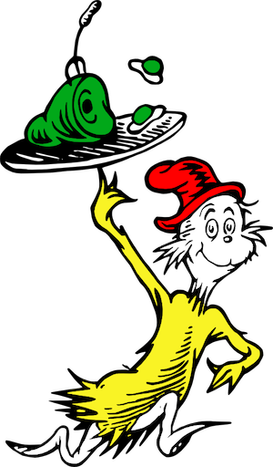

Green Eggs and Ham

Ham with Green Eggs
- 8 slices of ham
- 8 Eggs
- 2 cups of spinach
- Salt and Pepper
STEPS:
- Heat skillet
- Microwave Ham and leave
- Place cracked eggs and spinach into a blender utill smooth
- Pour mixture into pan
- cook until done
- Enjoy with your favorite book!